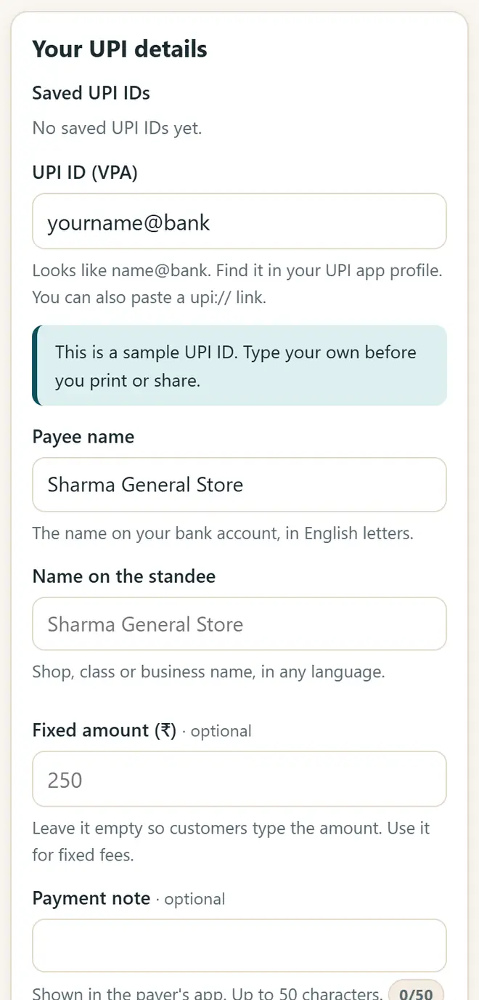
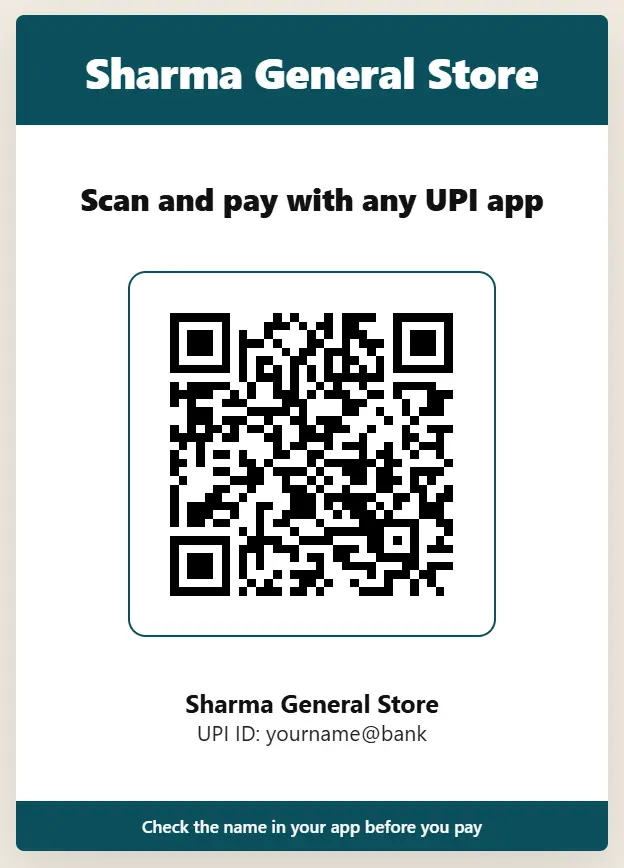

ಅಂಗಡಿಗೆ UPI QR ಕೋಡ್ ತಯಾರಿಸುವುದು ಹೇಗೆ (ಉಚಿತ, ಮುದ್ರಿಸಬಹುದಾದ ಸ್ಟ್ಯಾಂಡಿ)
ನಿಮ್ಮ UPI ID ಯಿಂದ ತಯಾರಾದ QR ಕೋಡ್ಗೆ ಯಾವುದೇ UPI ಆ್ಯಪ್ನಿಂದ ಪಾವತಿಸಬಹುದು. ಅಂಗಡಿ, ಟ್ಯೂಷನ್ ಅಥವಾ ಸ್ಟಾಲ್ಗೆ ಕೆಲವೇ ನಿಮಿಷಗಳಲ್ಲಿ ಅಚ್ಚುಕಟ್ಟಾದ ಕೌಂಟರ್ ಸ್ಟ್ಯಾಂಡಿ ಮುದ್ರಿಸಿ, ಅದನ್ನು QR ವಂಚನೆಯಿಂದ ಸುರಕ್ಷಿತವಾಗಿಡಿ.
ಸಂಕ್ಷಿಪ್ತ ಉತ್ತರ
ನಿಮ್ಮ UPI ಆ್ಯಪ್ನ ಪ್ರೊಫೈಲ್ನಲ್ಲಿ ನಿಮ್ಮ UPI ID (name@bank ನಂತಹ) ನೋಡಿ. UPI QR ಮತ್ತು ಪೇಮೆಂಟ್ ಸ್ಟ್ಯಾಂಡಿ ತೆರೆದು, UPI ID ಮತ್ತು ಬ್ಯಾಂಕ್ ಖಾತೆಯಲ್ಲಿರುವ ಹೆಸರು ಬರೆದು, ಅಂಗಡಿ ಹೆಸರು ಸೇರಿಸಿ, ಸ್ಟ್ಯಾಂಡಿ, ಟೇಬಲ್ ಟೆಂಟ್ ಅಥವಾ ಸ್ಟಿಕ್ಕರ್ ವಿನ್ಯಾಸ ಆರಿಸಿ “ಮುದ್ರಿಸಿ” ಅಥವಾ “PNG ಡೌನ್ಲೋಡ್ ಮಾಡಿ” ಒತ್ತಿರಿ. ಕೌಂಟರ್ನಲ್ಲಿ ಇಡುವ ಮುನ್ನ ಬೇರೆ ಫೋನ್ನಿಂದ ₹1 ಕಳುಹಿಸಿ ಪರೀಕ್ಷಿಸಿ.
6 ಹಂತಗಳಲ್ಲಿ ನಿಮ್ಮ UPI QR ತಯಾರಿಸಿ
-
ನಿಮ್ಮ UPI ID ಹುಡುಕಿ
PhonePe, Google Pay, Paytm, BHIM ಅಥವಾ ನಿಮ್ಮ ಬ್ಯಾಂಕ್ ಆ್ಯಪ್ ತೆರೆದು ಪ್ರೊಫೈಲ್ನಲ್ಲಿ UPI ID ನೋಡಿ. ಅದು name@okaxis ನಂತೆ, ಅಥವಾ ಫೋನ್ ನಂಬರ್ ನಂತರ @ ಮತ್ತು ಬ್ಯಾಂಕ್ ಹೆಸರಿನಂತೆ ಇರುತ್ತದೆ.
-
ನಿಮ್ಮ ವಿವರಗಳನ್ನು ಬರೆಯಿರಿ
UPI QR ಮತ್ತು ಪೇಮೆಂಟ್ ಸ್ಟ್ಯಾಂಡಿ ತೆರೆಯಿರಿ. UPI ID ಮತ್ತು ಹಣ ಪಡೆಯುವವರ ಹೆಸರನ್ನು ಬ್ಯಾಂಕ್ ಖಾತೆಯಲ್ಲಿರುವಂತೆಯೇ, ಇಂಗ್ಲಿಷ್ ಅಕ್ಷರಗಳಲ್ಲಿ ಬರೆಯಿರಿ. ಅಂಗಡಿ ಹೆಸರನ್ನು ಯಾವುದೇ ಭಾಷೆಯಲ್ಲಿ ಸೇರಿಸಿ.

ನಿಮ್ಮ UPI ID, ಹಣ ಪಡೆಯುವವರ ಹೆಸರು ಮತ್ತು ಅಂಗಡಿ ಹೆಸರು ಬರೆಯಿರಿ. -
ನಿಗದಿತ ಮೊತ್ತ ಸೇರಿಸಿ (ಐಚ್ಛಿಕ)
ಗ್ರಾಹಕರೇ ಮೊತ್ತ ಬರೆಯಲು ಅದನ್ನು ಖಾಲಿ ಬಿಡಿ. ಟ್ಯೂಷನ್ ಶುಲ್ಕದಂತಹ ನಿಗದಿತ ಮೊತ್ತವಾದರೆ ಮೊತ್ತ ಮತ್ತು “ಜುಲೈ ಶುಲ್ಕ” ದಂತಹ ಟಿಪ್ಪಣಿ ಬರೆಯಿರಿ.
-
ವಿನ್ಯಾಸ ಆರಿಸಿ
ಕೌಂಟರ್ ಸ್ಟ್ಯಾಂಡಿ (A5 ಅಥವಾ A4), ಮಡಚಿ ಇಡುವ ಟೇಬಲ್ ಟೆಂಟ್, ಸ್ಟಿಕ್ಕರ್ ಹಾಳೆ ಅಥವಾ WhatsApp ಸ್ಟೇಟಸ್ಗಾಗಿ ಚಿತ್ರ ಆರಿಸಿ. ನಿಮ್ಮ ಲೋಗೋ ಮತ್ತು ಬಣ್ಣ ಸೇರಿಸಿ.

ಮುದ್ರಣಕ್ಕೆ ಸಿದ್ಧವಾದ ಕೌಂಟರ್ ಸ್ಟ್ಯಾಂಡಿ. -
ಮುದ್ರಿಸಿ ಅಥವಾ ಡೌನ್ಲೋಡ್ ಮಾಡಿ
“ಮುದ್ರಿಸಿ” ಅಥವಾ “PNG ಡೌನ್ಲೋಡ್ ಮಾಡಿ” ಒತ್ತಿರಿ. ದಪ್ಪ ಕಾಗದದಲ್ಲಿ ಮುದ್ರಿಸಿ ಅಥವಾ ಲ್ಯಾಮಿನೇಟ್ ಮಾಡಿಸಿ; QR ಕನಿಷ್ಠ 2.5 cm ಅಗಲವಿರಲಿ.
-
₹1 ಮೂಲಕ ಪರೀಕ್ಷಿಸಿ
ಬೇರೆ ಫೋನ್ನಿಂದ ₹1 ಕಳುಹಿಸಿ. QR ಬಳಸಲು ಆರಂಭಿಸುವ ಮುನ್ನ ನಿಮ್ಮ ಹೆಸರು ಕಾಣುತ್ತಿದೆಯೇ ಮತ್ತು ಹಣ ನಿಮ್ಮ ಬ್ಯಾಂಕಿಗೆ ಬರುತ್ತಿದೆಯೇ ಎಂದು ನೋಡಿ.
UPI QR ನೊಂದಿಗೆ ಸುರಕ್ಷಿತವಾಗಿರಿ
- ಹಣ ಪಡೆಯಲು QR ಸ್ಕ್ಯಾನ್ ಮಾಡುವ ಅಥವಾ UPI PIN ನಮೂದಿಸುವ ಅಗತ್ಯ ಎಂದಿಗೂ ಇಲ್ಲ. ಹಾಗೆ ಮಾಡಲು ಹೇಳುವವರು ನಿಮ್ಮನ್ನು ವಂಚಿಸಲು ಪ್ರಯತ್ನಿಸುತ್ತಿದ್ದಾರೆ.
- ನಿಮ್ಮ ಕೌಂಟರ್ QR ಅನ್ನು ದಿನವೂ ನೋಡಿ: ವಂಚಕರು ಅಂಗಡಿಯ QR ಮೇಲೆ ತಮ್ಮ QR ಅಂಟಿಸುತ್ತಾರೆ.
- ಪ್ರತಿ ಪಾವತಿಯನ್ನು ನಿಮ್ಮ ಸ್ವಂತ UPI ಆ್ಯಪ್, ಸೌಂಡ್ ಬಾಕ್ಸ್ ಅಥವಾ ಬ್ಯಾಂಕ್ SMS ನಲ್ಲಿ ಖಚಿತಪಡಿಸಿ, ಗ್ರಾಹಕರ ಸ್ಕ್ರೀನ್ ಅಥವಾ ಸ್ಕ್ರೀನ್ಶಾಟ್ನಲ್ಲಲ್ಲ.
- ದಿನಕ್ಕೆ ಹಲವು ಪಾವತಿಗಳು ಬಂದರೆ, ನಿಮ್ಮ ಬ್ಯಾಂಕಿನಲ್ಲಿ ಮರ್ಚೆಂಟ್ (ವ್ಯಾಪಾರ) QR ಬಗ್ಗೆ ಕೇಳಿ ಅದರ ಸೌಲಭ್ಯಗಳು ಮತ್ತು ಶುಲ್ಕಗಳನ್ನು ಹೋಲಿಸಿ.
ಹೊಸ ಉಚಿತ ಟೂಲ್ಗಳು ಮತ್ತು ಹಿಂದಿಯಲ್ಲಿ AI ಪಾಠಗಳನ್ನು ಪಡೆಯಿರಿ
ನಮ್ಮ ಇಮೇಲ್ ಪಟ್ಟಿಗೆ ಸೇರಿ: ಹೊಸ ಉಚಿತ ಆ್ಯಪ್ಗಳು, ಹೊಸ ಮಾರ್ಗದರ್ಶಿಗಳು ಮತ್ತು AI ಕುರಿತ ಹಿಂದಿ ವೀಡಿಯೊ ಪಾಠಗಳ ಮಾಹಿತಿ ನಿಮಗೆ ಬರುತ್ತದೆ. ಸ್ಪ್ಯಾಮ್ ಇಲ್ಲ.
ವಯಸ್ಕರಿಗೆ (18+) ಮಾತ್ರ. ಯಾವಾಗ ಬೇಕಾದರೂ ಹೆಸರು ತೆಗೆಸಬಹುದು.
ನಾವು ಈ ಟೂಲ್ಗಳನ್ನು ಏಕೆ ಸೂಚಿಸುತ್ತೇವೆ
- ಎಲ್ಲರಿಗೂ ಉಚಿತ: ಜಾಹೀರಾತು ಇಲ್ಲ, ಸೈನ್-ಅಪ್ ಇಲ್ಲ, ಪಾವತಿ ಯೋಜನೆ ಇಲ್ಲ.
- ಖಾಸಗಿ: ನಿಮ್ಮ ಫೈಲ್ಗಳು ಮತ್ತು ವಿವರಗಳು ನಿಮ್ಮ ಸ್ವಂತ ಸಾಧನದಲ್ಲೇ ಇರುತ್ತವೆ.
- ಫೋನ್, ಲ್ಯಾಪ್ಟಾಪ್ ಅಥವಾ ಸ್ಮಾರ್ಟ್ಬೋರ್ಡ್ನಲ್ಲಿ ಕೆಲಸ ಮಾಡುತ್ತವೆ, ಒಮ್ಮೆ ತೆರೆದ ನಂತರ ಇಂಟರ್ನೆಟ್ ಇಲ್ಲದೆಯೂ.
- ಕನ್ನಡ ಮತ್ತು ಹಿಂದಿ ಸೇರಿದಂತೆ 12 ಭಾಷೆಗಳಲ್ಲಿ.
ವೀಡಿಯೊ ಮೂಲಕ ಕಲಿಯಲು ಇಷ್ಟವೇ? ನಮ್ಮ YouTube ಚಾನೆಲ್ನಲ್ಲಿ AI ಮತ್ತು ಉಚಿತ ಟೂಲ್ಗಳ ಹಿಂದಿ ಪಾಠಗಳನ್ನು ನೋಡಿ.
ಆಗಾಗ ಕೇಳುವ ಪ್ರಶ್ನೆಗಳು
UPI QR ಕೋಡ್ ತಯಾರಿಸುವುದು ಉಚಿತವೇ?
ಹೌದು. UPI QR ಕೋಡ್ ಎಂದರೆ ಪ್ರತಿ UPI ಆ್ಯಪ್ ಓದಬಲ್ಲ ನಿಮ್ಮ UPI ID ಯ ಕೋಡ್ ಮಾತ್ರ. ಅದನ್ನು ತಯಾರಿಸಲು ಮತ್ತು ಮುದ್ರಿಸಲು ಖರ್ಚಿಲ್ಲ.
ಈ QR PhonePe, Google Pay ಮತ್ತು Paytm ನೊಂದಿಗೆ ಕೆಲಸ ಮಾಡುತ್ತದೆಯೇ?
ಹೌದು. ಇದರಲ್ಲಿ UPI ಯ ಪ್ರಮಾಣಿತ ಪಾವತಿ ಲಿಂಕ್ ಇದೆ; ಆದ್ದರಿಂದ ಯಾವುದೇ UPI ಆ್ಯಪ್ ಇದನ್ನು ಸ್ಕ್ಯಾನ್ ಮಾಡಿ ನಿಮಗೆ ಪಾವತಿಸಬಹುದು.
QR ನಲ್ಲಿ ನಿಗದಿತ ಮೊತ್ತ ಇಡಬಹುದೇ?
ಹೌದು. ಶುಲ್ಕ ಅಥವಾ ನಿಗದಿತ ಬೆಲೆಗೆ ಮೊತ್ತ ಬರೆಯಿರಿ. ಪ್ರತಿ ಬಾರಿ ಬೇರೆ ಬಿಲ್ ಆದರೆ “ಕೌಂಟರ್ ಮೋಡ್” ಬಳಸಿ: ಬಿಲ್ ಮೊತ್ತ ಬರೆದು ಫೋನ್ ಅನ್ನು ಗ್ರಾಹಕರ ಕಡೆ ತಿರುಗಿಸಿ.
ಈ ಆ್ಯಪ್ನಲ್ಲಿ ನನ್ನ UPI ID ಸುರಕ್ಷಿತವೇ?
ನಿಮ್ಮ UPI ID, ಹೆಸರು ಮತ್ತು ಲೋಗೋ ನಿಮ್ಮ ಸಾಧನದಲ್ಲೇ ಇರುತ್ತವೆ. ಹಲವು QR ವೆಬ್ಸೈಟ್ಗಳು ನೀವು ಬರೆದದ್ದನ್ನು ಉಳಿಸಬಹುದು; ಈ ಆ್ಯಪ್ ಏನನ್ನೂ ಅಪ್ಲೋಡ್ ಮಾಡುವುದಿಲ್ಲ.
ಸೌಂಡ್ ಬಾಕ್ಸ್ ಅಗತ್ಯವೇ?
ಇಲ್ಲ. QR ಅದಿಲ್ಲದೆಯೂ ಕೆಲಸ ಮಾಡುತ್ತದೆ. ಪ್ರತಿ ಪಾವತಿಯನ್ನು ನಿಮ್ಮ UPI ಆ್ಯಪ್ ಅಥವಾ ಬ್ಯಾಂಕ್ SMS ನಲ್ಲಿ ನೋಡಿ. ಸೌಂಡ್ ಬಾಕ್ಸ್ ಬೇಕಾದರೆ ಅದು ನಿಮ್ಮ ಬ್ಯಾಂಕ್ ಅಥವಾ UPI ಆ್ಯಪ್ನಿಂದ ಸಿಗುತ್ತದೆ.
ಉಪಯೋಗವಾಯಿತೇ?
ಸ್ನೇಹಿತರಿಗೆ, ಸಹೋದ್ಯೋಗಿಗಳಿಗೆ ಅಥವಾ ನಿಮ್ಮ ಶಾಲೆಯ WhatsApp ಗುಂಪಿಗೆ ಕಳುಹಿಸಿ.